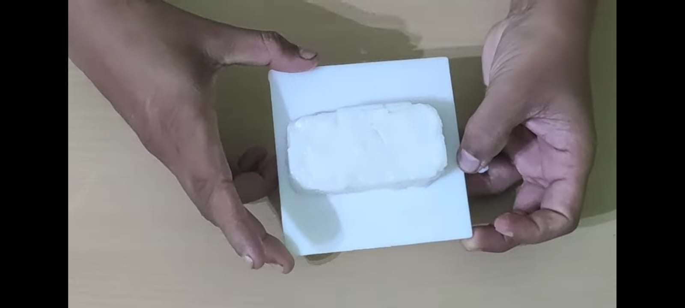
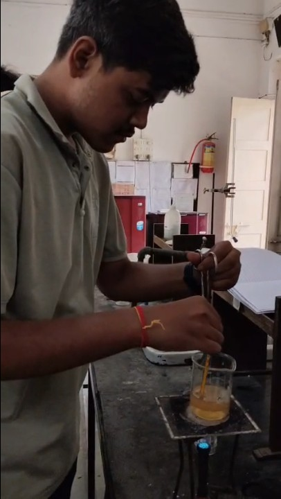
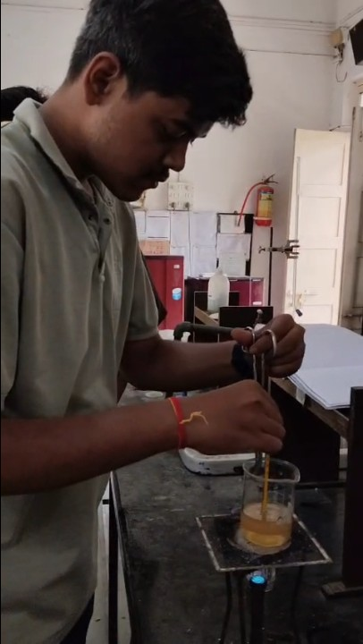
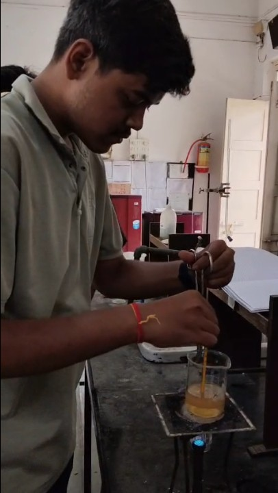

Batch 014
Real Prototype
Artisanal Prototype Bar
249Cold-pressed plant oils · rich plant glycerine · unrefined shea
Cold-process soap / small batch
Batch 014 · Physical PrototypePlant oils, mineral clays, and nothing that doesn't need to be there. Hand-poured into wooden molds, cured for 42 days on cedar slats, and cut by calibrated wire. Not rushed, never synthetic.
Batch 014 Physical Studio Bar · 100% Biodegradable & Plastic-Free

Batch 014 Prototype Handmade Soap Cold-Process · ₹24901 / The studio prototype
No synthetic perfumes or fake listings. Below is our authentic Batch 014 prototype bar, cured for 42 days, cut with calibrated wire, and ready for your bathroom sink.
Cold-pressed plant oils · rich plant glycerine · unrefined shea
Triple loaf cut · parchment wrapped · free studio shipping
Cured prototype bar paired with slotted cedar wood curing dish
Prototype Selector · Personal Ritual
Cold-process soap works with your skin's natural mantle. Select what you need for your home today:
Our physical studio prototype. Hand-poured in wooden molds at 34°C and cured for 42 days. Made strictly with food-grade plant oils, mineral clays, and natural saponification. Free of palm oil, artificial hardening agents, and synthetic fragrance.
02 / The studio method
Cold-process soap can't be rushed. We blend at low heat, pour into wooden molds, and let the chemistry finish over 42 days. Below is our real studio footage and step-by-step photography.

Studio ShotCold-pressed olive and coconut oils meet mineral lye at 34°C. No synthetic heat or accelerants, allowing natural plant glycerine to develop.
Step 01 · Low Temperature Trace
Studio ShotSun-dried French mineral clays and steam-distilled botanicals fold in slowly by hand into silicone-lined wooden loaf molds.
Step 02 · Poured in Micro Batches
Studio ShotBars rest on cedar slats in our drying room. As water evaporates naturally, a dense, durable bar forms that never dissolves into mush.
Step 03 · 42 Days of Natural DryingEach loaf is hand-sliced with a calibrated wire cutter, edge-beveled, and inspected for density before wrapping in compostable paper.
Step 04 · Hand-Finished Studio BarCaptured live in the workshop: the finished white cold-process bar resting on its curing tile. Balanced moisture, smooth matte finish, and clean hand-cut bevels.
03 / The formula
Fewer ingredients, chosen for how they behave on skin. Every component has a job. If it doesn't, it doesn't make the bar.
Cold-pressed from small groves. Creates a dense, gentle lather that cleanses while guarding the skin's lipid barrier.
Gives the bar its bubbly, velvety foam and lifts away daily grime effortlessly, rinsing clean without residue.
Ethically harvested and raw. Rich in natural vitamins A and E, giving the lather a decadent, lotion-like cushion.
Pink kaolin and green illite mined naturally and sun-dried. Polishes dead cells and supplies earth-derived mineral tones.
Atlas cedar, vetiver root, and rose geranium. Scented enough to delight, honest enough not to overpower.
Purity certificate
Zero CompromiseSoap doesn't need much. We keep it that way: a short ingredient list, a 6-week cure, and zero landfill waste.
04 / Word of mouth
4.9 / 5.0 rating · 240+ small-batch deliveries
“The lather is impossibly rich, and it rinses so cleanly. Most artisanal soaps melt away in a week, but the 42-day cure gives this prototype bar great longevity.”
“I have had eczema since childhood and avoided commercial soap completely. This cold-process prototype bar cleans my skin without that tight, burning dryness.”
“Holding the physical prototype bar feels different—it has weight, smooth edges, and an honest earthy texture. It sits proudly on our studio draining tray.”
05 / The studio & craft
“Soap is a small thing. It should still be made like it matters.”
Sorrel began with a simple frustration: the soap in our bathrooms was either synthetic and mass-produced, or honest and ugly. We wanted both. A bar you could leave on the sink, made from pure plant ingredients you could actually name.
Everything is made in small batches, by hand, in a workshop filled with raw cedar slats and curing loaves. We don't chase trends. We craft honest cold-process soap, cure it for 42 days, and let the result speak for itself.
From the Sorrel studio · Batch 014
The Studio Team · Batch 014
Our cold-process workshop is built on chemical precision, botanical purity, and honest craftsmanship. Meet the team behind the formulation, pour, and curing:
Calculates saponification lye values, superfatting percentages, and temperature control at 34°C to preserve natural plant glycerine and moisture-rich fatty acids.
Directs sourcing of unrefined shea butter and virgin cold-pressed olive oils, managing precise micro-batch hand pours and natural mineral clay swirls in wooden molds.
Fabricates studio wooden molds, regulates the 42-day open cedar curing environment, and executes calibrated guitar-wire slicing and edge beveling for every bar.
06 / Studio care · FAQ
Cold-process soap contains natural plant glycerine that loves water. A few simple habits keep your bar dense and long-lasting.
With daily sink use by one person, each bar lasts approximately 5 to 6 weeks. When used in the shower, keeping it on a draining cedar soap dish extends its life significantly.
Yes. The Batch 014 formula is superfatted with unrefined shea butter and virgin olive oil, leaving nourishing unsaponified oils on the skin that cleanse without stripping facial moisture.
Commercial soaps are forced dry with synthetic heat and harsh binders. In contrast, our open-air 6-week cure lets water evaporate naturally, allowing the soap crystalline structure to harden so it won't melt into mush in your dish.
We use 100% recycled unbleached cardboard mailers, paper parcel tape, and crinkled kraft paper cushioning. There is zero plastic film, bubble wrap, or synthetic foam anywhere in your package.